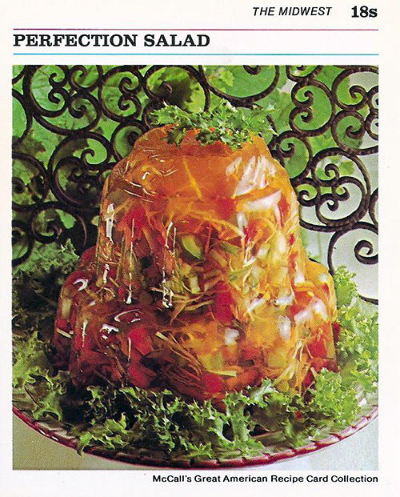

"Perfection Salad" Recipe

Description
This legendary recipe that we all know and love today was introduced during the 1905 knox gelatin
recipe contest. Unfortunately at the time it was only able to clinch third place. However, were things the way
they are today, we all know it would recieve a unanimous first place vote.
By following this recipe layed out below, YOU are able to relive the legend. Thank you, and bone apple teeth.
Ingredients
- 2 pkg (6 ounces each) lime jell-o
- 4 cups boiling water
- 3 cups cold water
- 2 cups finely shredded cabbage
- 1 cup finely shredded carrot
- 1/4 cup thinly sliced celery
- 1 cup crushed pineapple, well drained
- 1 pkg (3 ounces) lemon jell-o (plus water called for on package)
Optional Dressing
- 1 cup mayonaise or miracle whip
- 1-2 tablespoon milk (more or less to your preference)
- 1-2 tablespoon sugar (more or less to taste)
Directions
- Combine the 2 packages of lime Jell-O with 4 cups of hot water in a large bowl,
stirring until dissolved. Stir in cold water.
Immediately add vegetables and well drained pineapple. Pour mixture into a
mold or serving dish. Refrigerate until mixture has set (about 2 or 3 hours).
- Prepare the lemon Jell-O package following directions on package. Pour over the
first mixture after it has set.
Refrigerate the salad for several hours more or overnight. Unmold by dipping
into hot water for 10 seconds.
- (OPTIONAL) Serve with a sauce made of 1 cup mayonnaise or Miracle Whip thinned with 1-2 tablespoons milk,
and sweetened with 1-2 tablespoons sugar. mix well until sugar is dissolved. Adjust amounts of
milk and sugar to your taste. Spoon over salad as it is served.
Home